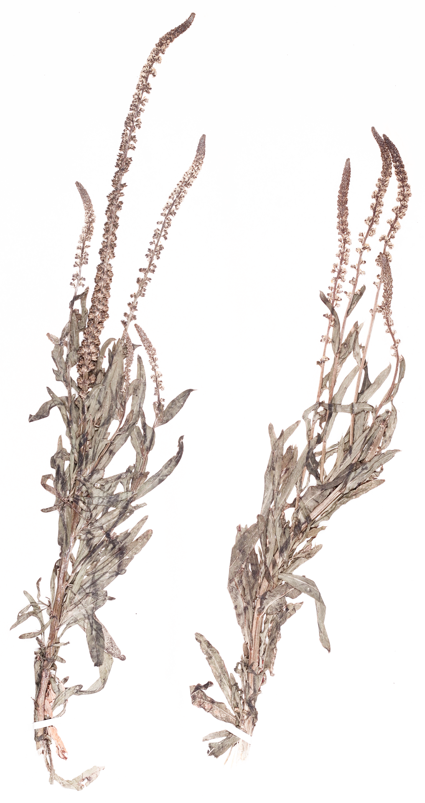

Welcome to Botanical Colour
An archive exploring botanical colour, plant-based dyes, and material processes.
Archif sy’n archwilio lliw botanegol, llifynnau seiliedig ar blanhigion, a phrosesau deunyddiau

An archive exploring botanical colour, plant-based dyes, and material processes.
Archif sy’n archwilio lliw botanegol, llifynnau seiliedig ar blanhigion, a phrosesau deunyddiau